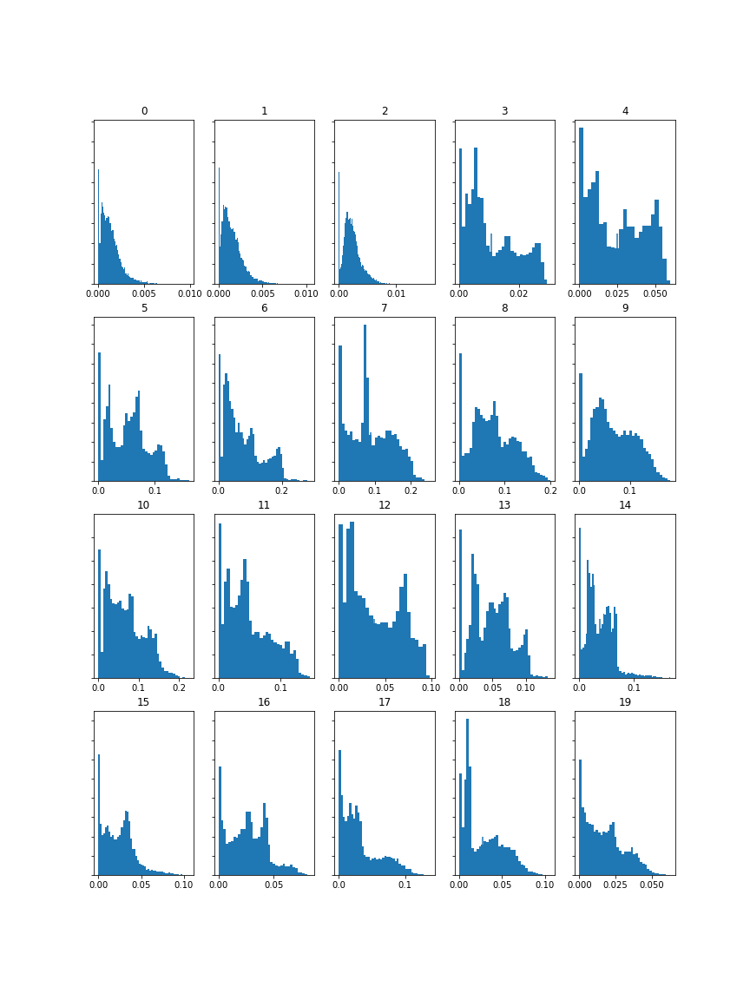
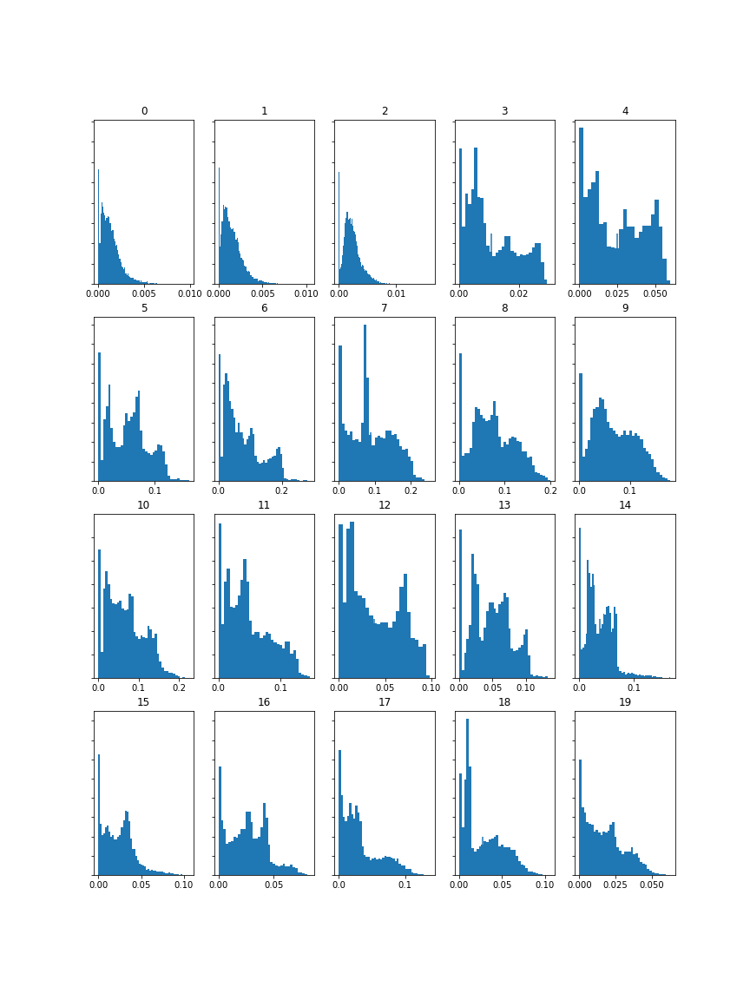
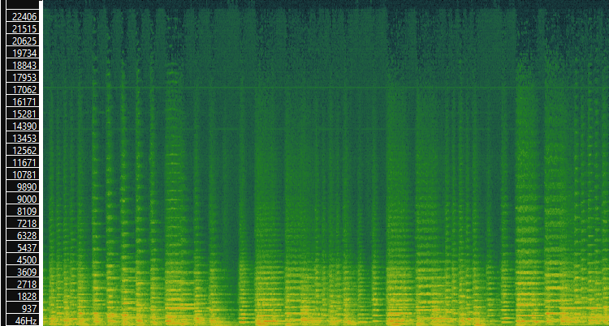

Task Overview
This week, we analyze three Mozart pieces using Sonic Visualizer and Python to extract audio features such as **spectrograms**, **Mel Frequency Cepstral Coefficients (MFCC)**, and **Chromagrams**. These features are visualized through histograms to understand the underlying patterns in the music.
1. Spectrograms, MFCC, and Chromagrams
Below are the visualizations for the selected Mozart pieces:
Piece 1: Eine kleine Nachtmusik, K. 525 (A Little Night Music)
 


Piece 2: Piano Sonata No. 11 in A major, K. 331 (Including the famous "Rondo alla Turca")


Piece 3: Symphony No. 40 in G minor, K. 550

2. Feature Histograms
These histograms represent the feature distributions of the selected pieces:


3. Difference Analysis
The histograms for Chroma features reveal noticeable differences between the tracks. Track 1 exhibits peaks emphasizing harmonic stability, while Track 2's distribution reflects melodic richness. Track 3 shows uniformity, aligning with its dynamic melodic structure. These variations are consistent with auditory observations.